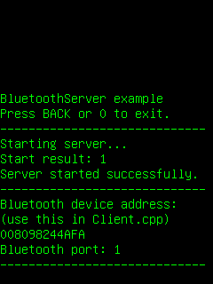

This application acts as a Bluetooth server. It is designed to work with our BluetoothClient example application.
|  | ||
| On start up | Connection established | Receiving data |
This example is included in the MoSync SDK installation in the /examples folder. For information on importing the examples into your workspace, see Importing the Examples.
To use this example application with our BluetoothClient application, you will need two Bluetooth capable devices. Make sure that Bluetooth is turned on on both devices and that the devices are paired before running the server and the client applications.
The file Common.h contains contains a full description of how to use the projects together, along with the variables and functions shared between the BluetoothServer and BluetoothClient projects (including the service UUID).
Note: when making your own projects that use Bluetooth, you need to enable Bluetooth for your project under Properties > MoSync Project > Application Permissions.
This application sets up an RFCOMM service with a particular UUID and listens for connections. When this application starts up successfully on a device (or in the MoRE emulator on a computer) with activated Bluetooth capabilities you will see the message "Server started successfully" followed by the server device's Bluetooth address in hexadecimal. You need to supply this address in the BluetoothClient application as the value of sServerAddress.
When a connection is accepted from the BluetoothClient application, the connection ID is shown along with the client device's Bluetooth address.
As data is received from a client (in BluetoothClient when a key is pressed or the screen is touched), the connection ID and the data are printed to the screen. The data is usually sent one character at a time, but may be buffered if the connection is slow.